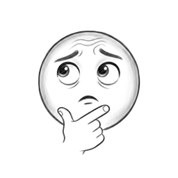
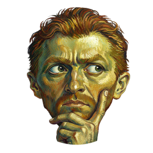
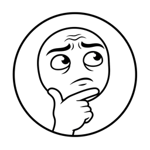
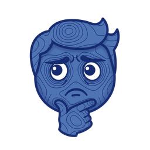
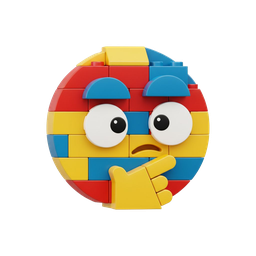
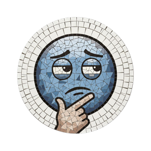
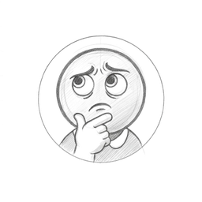
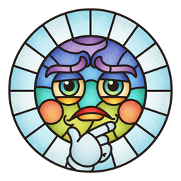
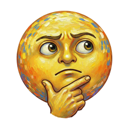

day 50 · since 2026-04-01









one new thonk emoji per day. each day at ~00:10 UTC, a controlled-axis prompt rotation picks a style modifier and asks replicate's google/nano-banana for a single emoji-style illustration of a thonk face. the result is committed here and deployed. no curation, no resubmits — what comes out is what ships. the variance is the value.
read-only collection. no accounts. no votes. no comments. one tile a day, growing on its own.
made by reflection. source at github.com/prmichaelsen/thonk.